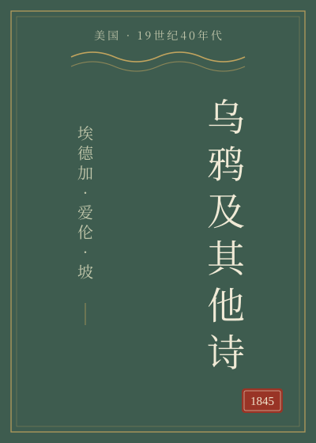
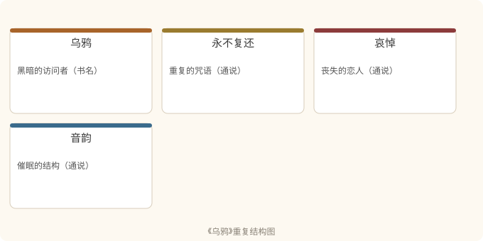

乌鸦及其他诗
一、基本信息
| 作者 | 埃德加·爱伦·坡 |
|---|---|
| 成书/出版 | 1845年（作者页注记：Britannica——The Raven, 1845） Edgar Allan Poe — Encyclopaedia Britannica（百科全书） |
| 国别/地区 | 美国 |
| 时代 | 近代 · 19世纪40年代 |
| 体裁 | 诗集 |
| 语言 | 英语 |

《乌鸦》重复结构图（主题·结构图）
二、创作背景
作者页注记：乌鸦及其他诗——'（Britannica：The Raven, 1845）'。
Britannica：坡——短篇小说家与诗人（作者页交叉）。
题材（通说待核）：《乌鸦》——'永不复还'（Nevermore）的哀悼重复。
三、内容脉络
（通说待核）《乌鸦》：深夜的访问者与丧失的恋人。
（通说待核）'永不复还'：鸟的回答。
四、主要人物表
| 人物 | 身份 | 说明 |
|---|---|---|
| 叙述者 | 哀悼者 | （通说待核） |
| 乌鸦 | 不祥之鸟 | （通说待核） |
五、主题与艺术特点
- '永不复还'的重复（书名语境——通说待核）。
- 丧失与疯狂（通说待核）。
- 音韵的催眠术（通说待核）。
六、影响与评论
- Britannica：The Raven (1845)（作者页注记）。
Edgar Allan Poe — Encyclopaedia Britannica（百科全书） - Britannica：坡的短篇小说（作者页交叉）。
Edgar Allan Poe — Encyclopaedia Britannica（百科全书）
七、阅读建议
难点
- '乌鸦'的音步。
- 哥特语境。
- 《乌鸦及其他诗》中译本（人民文学等——通说待核）。
- 英文原版（公有领域）。
坡诗歌首选；与《厄舍府的倒塌》对读。
八、待核实
- 《乌鸦》首发（《美国评论》1845说）待核。
- 诗集篇目核对（通说）。
- 'Nevermore'重复细节待核。